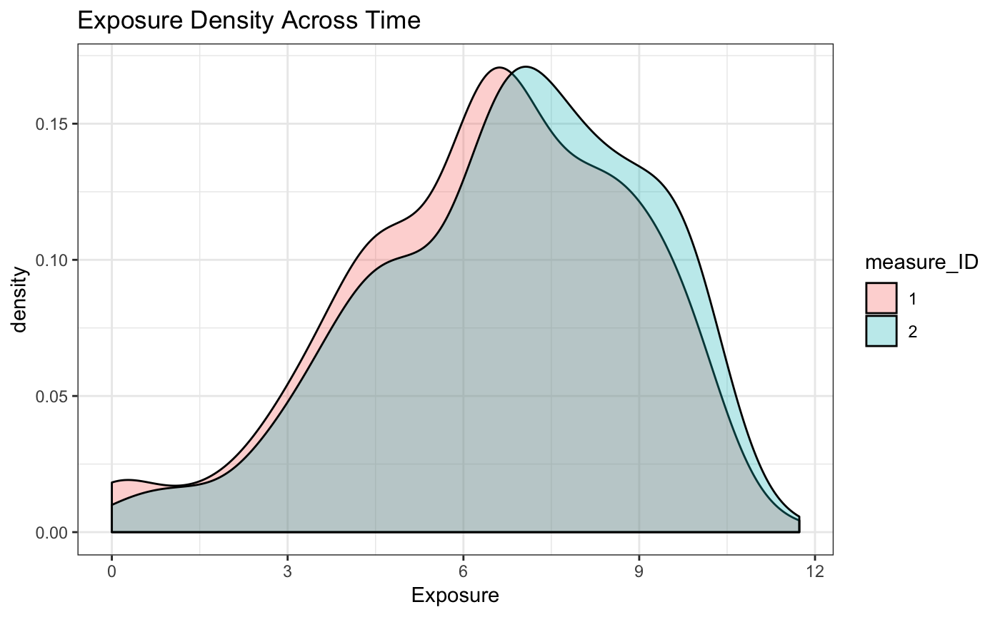
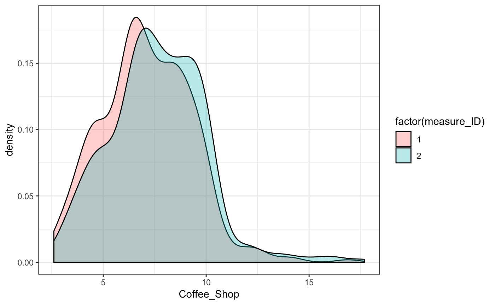

STAP in a Longitudinal Data Setting
longitudinal-I.RmdSpatial-temporal aggregated predictor (STAP) models extension in the longitudinal setting incorporates heirarchical variance components to account for within subject or group-level correlation.
This setting also involves a substantially different data structure, since exposure to built environment features now occurs across time and subjects can move across time or space. Additionally since subjects may drop out of a study and built-environment features - stores - may close or open, the staps are neccessarily different at each measurement. The inclusion of these repeated measures, requires a secondary id to join on in addition to the typical id_key for the distance_data and time_data arguments to the stap_glmer function. We’ll demonstrate this and the stap model with random effects using the simple case of homogenously distributed built environment features, with subjects measured across two time points.
library(dplyr)
library(tidyr)
library(ggplot2)
library(rstap)
library(plot3D)Measurement Data
Below we can see what the data, when initially measured, might look like before preparing it for model fitting.
knitr::kable(head(subj_data))| x | y | date | ID | class |
|---|---|---|---|---|
| 0.7253479 | -0.7452062 | 1974-05-11 | 1 | Subject |
| -0.6051202 | -0.2405906 | 1976-03-04 | 2 | Subject |
| 0.1696653 | 0.5845662 | 1976-04-15 | 3 | Subject |
| -0.3834797 | -0.9895510 | 1986-12-24 | 4 | Subject |
| 0.2920221 | 0.7254065 | 1987-07-17 | 5 | Subject |
| 0.8772785 | -0.7254489 | 1974-01-31 | 6 | Subject |
knitr::kable(head(bef_data))| x | y | date_open | date_close | ID | class |
|---|---|---|---|---|---|
| 0.7851891 | 0.3844256 | 1967-07-31 | NA | 1 | Coffee_Shop |
| -0.0703001 | -0.7953893 | 1961-11-26 | NA | 2 | Coffee_Shop |
| 0.0178176 | -0.6283173 | 1968-02-10 | NA | 3 | Coffee_Shop |
| -0.5009678 | -0.6053075 | 1968-11-16 | NA | 4 | Coffee_Shop |
| 0.5744385 | 0.5685900 | 1969-07-13 | NA | 5 | Coffee_Shop |
| 0.7722542 | -0.7553629 | 1962-07-05 | NA | 6 | Coffee_Shop |
The third and final dataset involves the subject specific data and the dates at which the measurements were taken.
| ID | sex | DOB | Income | measure_date | Age | measure_ID |
|---|---|---|---|---|---|---|
| 1 | 0 | 1969-04-19 | 55.82780 | 2000-07-30 | 31.30137 | 1 |
| 1 | 0 | 1969-04-19 | 164.21804 | 2003-11-08 | 34.57808 | 2 |
| 2 | 1 | 1953-05-04 | 73.82412 | 2000-04-11 | 46.96986 | 1 |
| 2 | 1 | 1953-05-04 | 168.65774 | 2002-04-16 | 48.98356 | 2 |
| 3 | 1 | 1965-08-01 | 36.23697 | 2000-12-05 | 35.36986 | 1 |
| 3 | 1 | 1965-08-01 | 131.82313 | 2002-12-04 | 37.36712 | 2 |
Transforming the Measured Data
In order to join these datasets, a new ID has to be created to associate the spatial-temporal data with a specific measurement date. We create this ID to include all spatial data up to and including the measurement date for each subject.
Note that for subjects one and two there are two rows, corresponding to the two measurements. In contrast, subject nine has four rows, corresponding to the fact that subject 9’s move before the two measurements results in both locations of 9’s residence being associated with all measurements subsequently measured.
subj_data %>% left_join(subj_fdata,by="ID") %>%
filter(ID %in% c(1,2,9)) %>%
select(ID,measure_ID,x,y,date,measure_date) %>% knitr::kable()| ID | measure_ID | x | y | date | measure_date |
|---|---|---|---|---|---|
| 1 | 1 | 0.7253479 | -0.7452062 | 1974-05-11 | 2000-07-30 |
| 1 | 2 | 0.7253479 | -0.7452062 | 1974-05-11 | 2003-11-08 |
| 2 | 1 | -0.6051202 | -0.2405906 | 1976-03-04 | 2000-04-11 |
| 2 | 2 | -0.6051202 | -0.2405906 | 1976-03-04 | 2002-04-16 |
| 9 | 1 | -0.7904145 | -0.8712954 | 1985-09-21 | 2000-10-24 |
| 9 | 2 | -0.7904145 | -0.8712954 | 1985-09-21 | 2001-01-04 |
Stores Opening and Closing, Subjects Moving in the Data
Here we can see the effect of a store closing (BEF_ID 10) and a subject moving (subj_ID 9) on the data structure. Note that first row’s time is ~25.8 years which reflects the time spent since the subject first moved to their location. Since neither the subject nor the business moves by the subject’s second measurement in July of 2001, we see that the distances betwen subject 1 and Coffee Shop 1 stay constant, and the time increases according to the difference in measurement date, only.
In contrast, we see the effect of a subject moving for subj_ID 9. Here (s)he has twice as many measurements to show her/his exposure to the same coffee shop at the different locations where subj 9 lived. This is shown most evidently in the constant exposure for for coffee shops at the 1985 location for subject 9. Since subject 9 moved after ~6 years, and coffee shop 1 hadn’t closed at that time, subject 9 only has 6 years of exposure to that coffee shop at that distance. Following this we can see a steadily increasing exposure until the coffee shop closes in 2002, roughly a year before the subject’s second measurement in ’03.
td_data %>%
filter(subj_ID %in% c(1,9),bef_ID%in%c(1,10)) %>%
arrange(subj_ID,measure_ID,bef_ID) %>%
knitr::kable()| subj_ID | measure_ID | bef_ID | measure_date | date_open | date_close | date | class | dist | time |
|---|---|---|---|---|---|---|---|---|---|
| 1 | 1 | 1 | 2000-07-30 | 1967-07-31 | NA | 1974-05-11 | Coffee_Shop | 1.131216 | 26.23836 days |
| 1 | 1 | 10 | 2000-07-30 | 1963-09-19 | NA | 1974-05-11 | Coffee_Shop | 1.961466 | 26.23836 days |
| 1 | 2 | 1 | 2003-11-08 | 1967-07-31 | NA | 1974-05-11 | Coffee_Shop | 1.131216 | 29.51507 days |
| 1 | 2 | 10 | 2003-11-08 | 1963-09-19 | NA | 1974-05-11 | Coffee_Shop | 1.961466 | 29.51507 days |
| 9 | 1 | 1 | 2000-10-24 | 1967-07-31 | NA | 1985-09-21 | Coffee_Shop | 2.014786 | 15.10137 days |
| 9 | 1 | 10 | 2000-10-24 | 1963-09-19 | NA | 1985-09-21 | Coffee_Shop | 1.823751 | 15.10137 days |
| 9 | 2 | 1 | 2001-01-04 | 1967-07-31 | NA | 1985-09-21 | Coffee_Shop | 2.014786 | 15.29863 days |
| 9 | 2 | 10 | 2001-01-04 | 1963-09-19 | NA | 1985-09-21 | Coffee_Shop | 1.823751 | 15.29863 days |
Simulating and Estimating a STAP model
If we were to assume the following model from the previous data set-up
\[ E[Y_{ij}|b_i] = \alpha + Z_1\delta_{Income} + Z_{2}\delta_{sex} + Z_{3}\delta_{Age} + X(\theta_s,\theta_t)\beta_{Coffee} + b_i \] Where \[ X(\theta_s,\theta_t) = \sum_{d\in\mathcal{D}} w_d(\frac{d}{\theta_s}) w_t(\frac{t}{\theta_t}) \]
and simulate it under the following fixed values
alpha <- 22
delta <- c(Income = -.35,sex = 1.1, Age = 1.2)
beta <- 1
theta_s <- .8
theta_t <- 18
sigma <- 2
tau <- 1.5
d <- seq(from = 0, to = max(td_data$dist), by = 0.01)
t <- seq(from = 0, to = as.numeric(max(td_data$time)), by = 0.05)
w_s <- pracma::erfc(d/theta_s)
w_t <- pracma::erf(t/theta_t)We could see the individual spatial and temporal exposure functions
par(mfrow=c(1,2))
plot(d,w_s,type='l', main="Spatial Decay",xlab = "Distance", ylab ="Exposure")
plot(t,w_t,type = "l", main = "Temporal Accumulation",xlab='years', ylab = "Exposure")
As well as the joint spatial-temporal exposure surface: 
This results in the following exposure density across the population. Note that the exposure density value increases between the two measurements. This reflects the increased impact as a result of spending more time in the same space. With real data this may not be the case, given that individuals



subj_fdata <- subj_fdata %>% left_join(cbind(lme_inf$fr,y,y_bern),by=c("ID","measure_ID")) %>%
mutate(sex = sex.x, Coffee_Shop= Coffee_Shop.x,subj_ID=ID,
centered_income = `I((Income - mean(Income))/sd(Income))`,
centered_age = `I((Age - mean(Age))/sd(Age))`) %>%
select(subj_ID,DOB,Coffee_Shop,sex,
centered_income,centered_age,y,y_bern,
ran_int,measure_ID,Age,Income)The final datasets passed to the stap_glmer function will then be the subject specific data, and then the distance and/or time dataset corresponding to whether or not a spatial or temporal scale is estimated.
| subj_ID | Income | measure_ID | Age | ran_int | y | sex | Coffee_Shop |
|---|---|---|---|---|---|---|---|
| 1 | 55.82780 | 1 | 31.30137 | 0.2581927 | 27.79630 | 0 | 8.470124 |
| 2 | 73.82412 | 1 | 46.96986 | -0.6825780 | 33.81810 | 1 | 8.489090 |
| 3 | 36.23697 | 1 | 35.36986 | 0.4801513 | 33.05382 | 1 | 8.991242 |
| 4 | 28.86876 | 1 | 36.47671 | 2.8948296 | 32.27050 | 1 | 3.582213 |
| 5 | 47.23422 | 1 | 39.40822 | 0.9040974 | 29.30665 | 0 | 6.115291 |
| 6 | 78.05369 | 1 | 32.98082 | 0.0097133 | 26.87130 | 1 | 6.953036 |
| subj_ID | measure_ID | date | bef_ID | class | dist |
|---|---|---|---|---|---|
| 1 | 1 | 1974-05-11 | 1 | Coffee_Shop | 1.1312156 |
| 2 | 1 | 1976-03-04 | 1 | Coffee_Shop | 1.5243376 |
| 3 | 1 | 1976-04-15 | 1 | Coffee_Shop | 0.6472447 |
| 4 | 1 | 1986-12-24 | 1 | Coffee_Shop | 1.8037734 |
| 5 | 1 | 1987-07-17 | 1 | Coffee_Shop | 0.5995679 |
| 6 | 1 | 1974-01-31 | 1 | Coffee_Shop | 1.1136884 |
| subj_ID | measure_ID | date | bef_ID | class | time |
|---|---|---|---|---|---|
| 1 | 1 | 1974-05-11 | 1 | Coffee_Shop | 26.23836 days |
| 2 | 1 | 1976-03-04 | 1 | Coffee_Shop | 24.12055 days |
| 3 | 1 | 1976-04-15 | 1 | Coffee_Shop | 24.65753 days |
| 4 | 1 | 1986-12-24 | 1 | Coffee_Shop | 13.54795 days |
| 5 | 1 | 1987-07-17 | 1 | Coffee_Shop | 13.05479 days |
| 6 | 1 | 1974-01-31 | 1 | Coffee_Shop | 26.65753 days |
We’ll fit the data with priors that reflect our relative uncertainty about the spatial and temporal scales and place a fairly uninformative prior on the subject-specific variance. For information on how priors are set on the subject specific covariance, see the rstanarm vignette’s write up here.
fit <- stap_lmer(y ~ centered_income + sex + centered_age + stap(Coffee_Shop) + (1|subj_ID),
subject_data = homog_longitudinal_subject_data, ## names of datasets
distance_data = homog_longitudinal_distance_data,## simulated above
time_data = homog_longitudinal_time_data, ## in the rstap package
subject_ID = 'subj_ID',
group_ID = 'measure_ID',
prior_intercept = normal(location = 25, scale = 4, autoscale = F),
prior = normal(location = 0, scale = 4,autoscale=F),
prior_stap = normal(location = 0, scale = 4),
prior_theta = list(Coffee_Shop = list(spatial = log_normal(location = 1,
scale = 1),
temporal = log_normal(location = 1,
scale = 1))),
prior_covariance = decov(regularization = 1,concentration = 1,
shape = 1,scale = 1),
prior_aux = cauchy(0,5),
max_distance = 3,
max_time = 50,
chains = 4,
iter = 2E3,
cores = 4)we can now look at our estimates.

We see that even though the temporal scale was quite a fair bit away from the bulk of the prior, the log normal tail and sufficiently data heavy likelihood allowed for a tight posterior interval around the temporal scale. Other parameter estimates were all accurate as well.